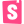

Operational front-end delivery
Business applications for commercial, financial, inventory, logistics and workforce processes. Complex states, permissions, reporting and product rules that have to survive the next release — not demo screens.
Frontend engineer · Seville, Spain
I build operational front-ends — business applications people use all day, with the states, permissions and long-lived rules that have to keep working next quarter. My base is Angular with SCSS, Ionic for mobile and Material for the design system.
Around that base I mentor the team, take the architecture decisions, set the quality gates and containerise what we ship. In my own time I build developer tooling, which is where I can still go deep on the parts I care about.
What I do
Business applications for commercial, financial, inventory, logistics and workforce processes. Complex states, permissions, reporting and product rules that have to survive the next release — not demo screens.
Angular and Ionic applications, packaged for Android with Capacitor. Interfaces designed for repeated, high-context use rather than one-off interactions.
I mentor the team and settle the trade-offs: what stays in the front-end, what moves to a service, what gets a gate and what gets a written decision.
Dockerised development environments, GitLab CI and GitHub Actions pipelines, container images, and focused test coverage on the parts that actually break.
An MCP runtime, a model serialization library and a static analysis engine — built because the tools I wanted did not exist yet.
NestJS, Bun and Node for the services behind the interfaces; SQLite and PostgreSQL for the data. Enough to own the whole path, not to pretend it is all front-end.
Evidence
MCP runtime core
Runtime core, tests excluded
2,709 test files in the same repository
API discovery engine, detected from source
Across five published development images
Quality gates in the runtime core alone
Selected projects

MCP runtime core
A project-agnostic core for building MCP servers, and the plugin loader that feeds them: named capabilities resolved at runtime, a lazy surface, public errors, private data — wrapped in a full proposal-to-release pipeline.

Static analysis
Detects the framework from the code itself, recovers request bodies from validation schemas, and exports to Postman, Bruno, Insomnia, HAR, OpenAPI or cURL. CLI, desktop builds and containers.
TypeScript library
Automatic type transformation, validation adapters, security tests and benchmarks, published as a library with an MCP server on top. The test suite is larger than the source on purpose.

Published package
Encrypts keys, API keys and .env files from the command line. Published on npm and used to keep real credentials out of the repositories and the images.

Print-ready CV
Vue 3 and TypeScript, with the curriculum modelled as validated data, internationalised in English and Spanish, and a print mode designed around real paper.
Product engineering
The Angular application behind this profile: zoneless, server-rendered, with unit and integration tests, and an MCP server wired into the build.

Containers
Docker environments for Angular, Ionic, NestJS, Node/Bun and Zsh workflows, published with pinned version matrices.
Game content
Schema-validated campaign content for Age of Empires II, authored in English and localised for Spain through a TypeScript and Python pipeline.
Core stack
Front-end — my base
Services, data & runtime
Tooling & AI infrastructure

StorybookPrimeNGQuality & delivery
How I work with AI
Contact
Open-source work, technical context and contact details are available through GitHub and LinkedIn.